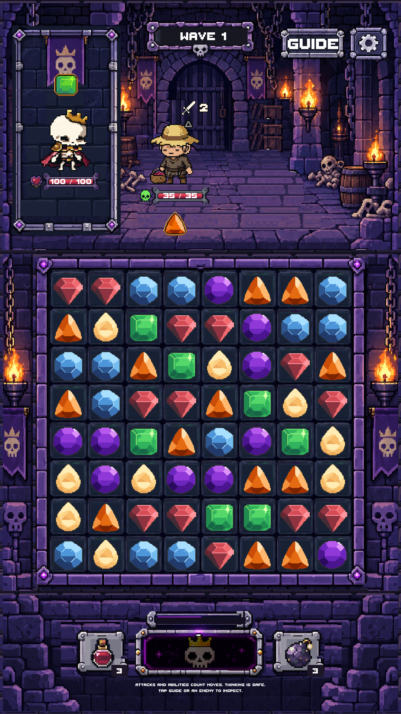
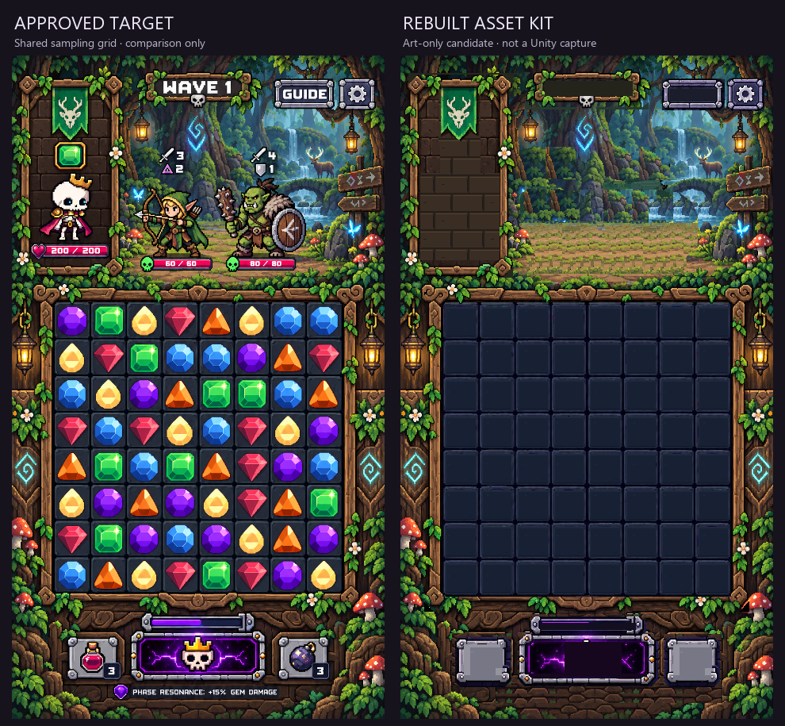
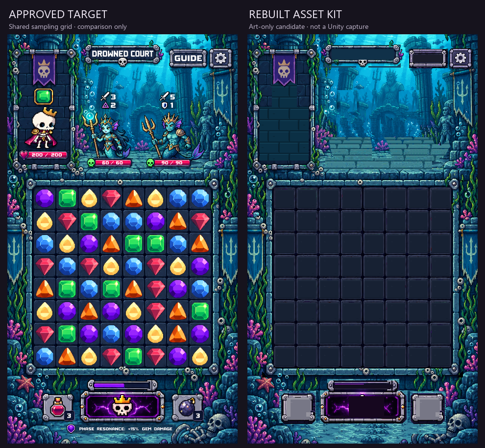

Dungeon is implemented from the approved modules. Forest and Underwater are new source kits for visual approval.
Live characters, gems, counters and controls. 40 tests passed; Unity validation passed. Audio muted.

720 × 1280 · 1080 × 2400 with safe-area test


Hidden surfaces use reconstructed source materials. Court hidden paving is more regular than the exposed reference stones. These are declared differences, not claims of exact recovery. Zero generations.